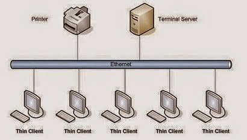

Click aqui para visitar la presentación de las gamas de los PC
 La computación paralela es una forma de cómputo en la que muchas instrucciones se ejecutan simultáneamente, operando sobre el principio de que problemas grandes, a menudo se pueden dividir en unos más pequeños, que luego son resueltos simultáneamente (en paralelo).
Hay varias formas diferentes de computación paralela: paralelismo a nivel de bit, paralelismo a nivel de instrucción, paralelismo de datos y paralelismo de tareas. El paralelismo se ha empleado durante muchos años, sobre todo en la computación de altas prestaciones, pero el interés en ella ha crecido últimamente debido a las limitaciones físicas que impiden el aumento de la frecuencia. Como el consumo de energía —y por consiguiente la generación de calor— de las computadoras constituye una preocupación en los últimos años, la computación en paralelo se ha convertido en el paradigma dominante en la arquitectura de computadores, principalmente en forma de procesadores multinúcleo.
Las computadoras paralelas pueden clasificarse según el nivel de paralelismo que admite su hardware: equipos con procesadores multinúcleo y multi-procesador que tienen múltiples elementos de procesamiento dentro de una sola máquina y los clústeres, MPPS y grids que utilizan varios equipos para trabajar en la misma tarea. Muchas veces, para acelerar la tareas específicas, se utilizan arquitecturas especializadas de computación en paralelo junto a procesadores tradicionales.
Los programas informáticos paralelos son más difíciles de escribir que los secuenciales, porque la concurrencia introduce nuevos tipos de errores de software, siendo las condiciones de carrera los más comunes. La comunicación y sincronización entre diferentes subtareas son algunos de los mayores obstáculos para obtener un buen rendimiento del programa paralelo.
La máxima aceleración posible de un programa como resultado de la paralelización se conoce como la ley de Amdahl.
 La clasificación de Flynn ha demostrado funcionar bastante bien para la tipificación de sistemas, y se ha venido usando desde décadas por la mayoría de los arquitectos de computadores. Sin embargo, los avances en tecnología y diferentes topologías, han llevado a sistemas que no son tan fáciles de clasificar dentro de los 4 tipos de Flynn. Por ejemplo, los procesadores vectoriales no encajan adecuadamente en esta clasificación, ni tampoco las arquitecturas hibridas. Para solucionar esto se han propuesto otras clasificaciones, donde los tipos SIMD y MIMD de Flynn se suelen conservar, pero que sin duda no han tenido el éxito de la de Flynn.
La clasificación de Flynn ha demostrado funcionar bastante bien para la tipificación de sistemas, y se ha venido usando desde décadas por la mayoría de los arquitectos de computadores. Sin embargo, los avances en tecnología y diferentes topologías, han llevado a sistemas que no son tan fáciles de clasificar dentro de los 4 tipos de Flynn. Por ejemplo, los procesadores vectoriales no encajan adecuadamente en esta clasificación, ni tampoco las arquitecturas hibridas. Para solucionar esto se han propuesto otras clasificaciones, donde los tipos SIMD y MIMD de Flynn se suelen conservar, pero que sin duda no han tenido el éxito de la de Flynn.
La figura de la derecha muestra una taxonomía ampliada que incluye alguno de los avances en arquitecturas de computadores en los últimos años. No obstante, tampoco pretende ser una caracterización completa de todas las arquitecturas paralelas existentes.
Click Aqui para regresar al Inicio de la página.Probablemente la clasificación más popular de computadores sea la clasificación de Flynn. Esta taxónoma de las arquitecturas está basada en la clasificación atendiendo al flujo de datos e instrucciones en un sistema. Un flujo de instrucciones es el conjunto de instrucciones secuenciales que son ejecutadas por un único procesador, y un flujo de datos es el flujo secuencial de datos requeridos por el flujo de instrucciones. Con estas consideraciones, Flynn clasifica los sistemas en cuatro categorías:
Uno de los criterios más importantes para la clasificación de las redes es el que tiene en cuenta la situación de la red en la máquina paralela, dando lugar a dos familias de redes: redes estáticas y redes dinámicas. Una red estática es una red cuya topología queda definida de manera definitiva y estable durante la construcción de la máquina paralela.
La red simplemente une los diversos elementos de acuerdo a una configuración dada. Se utiliza sobre todo en el caso de los multicomputadores para conectar los diversos procesadores que posee la máquina. Por la red sólo circulan los mensajes entre procesadores, por lo que se dice que la red presenta un acoplamiento débil. En general, en las redes estáticas se exige poca carga a la red.
Una red dinámica es una red cuya topología puede variar durante el curso de la ejecución de un programa paralelo o entre dos ejecuciones de programas. La red está constituida por elementos materiales específicos, llamados commutadores o switches.
Las redes dinámicas se utilizan sobre todo en los multiprocesadores. En este caso, la red une los procesadores a los bancos de memoria central. Cualquier acceso de un procesador a la memoria (bien sea para acceder a los datos o a las instrucciones) debe pasar a través de la red, por lo se dice que la red tiene un acoplamiento fuerte. La red debe poseer un rendimiento extremadamente bueno para no demorar demasiado a los procesadores que acceden a memoria.
Click Aqui para regresar al Inicio de la página.
Memoria primaria (MP), memoria principal, memoria central o memoria interna es la memoria de la computadora donde se almacenan temporalmente tanto los datos como los programas que la unidad central de procesamiento (CPU) está procesando o va a procesar en un determinado momento. Por su función, la MP debe ser inseparable del microprocesador o CPU, con quien se comunica a través del bus de datos y el bus de direcciones. El ancho del bus determina la capacidad que posea el microprocesador para el direccionamiento de direcciones en memoria.
En algunas ocasiones suele llamarse “memoria interna” porque a diferencia de los dispositivos de memoria secundaria, la MP no puede extraerse tan fácilmente.
Esta clase de memoria es volátil, es decir que cuando se corta la energía eléctrica, se borra toda la información que estuviera almacenada en ella.
La MP es el núcleo del subsistema de memoria de un sistema informático, y posee una menor capacidad de almacenamiento que la memoria secundaria, pero una velocidad millones de veces superior. Cuanto mayor sea la cantidad de memoria, mayor será la capacidad de almacenamiento de datos.
Cuando la CPU tiene que ejecutar un programa, primero lo coloca en la memoria y después lo empieza a ejecutar. Lo mismo ocurre cuando necesita procesar una serie de datos; antes de poder procesarlos los tiene que llevar a la memoria principal.
Dentro de la memoria de acceso aleatorio (RAM) existe una clase de memoria denominada memoria caché, que se caracteriza por ser más rápida que las demás, permitiendo que el intercambio de información entre la CPU y la MP sea a mayor velocidad.
La estructura de la memoria principal ha cambiado en la historia de las computadoras. Desde los años 1980 es prevalentemente una unidad dividida en celdas que se identifican mediante una dirección. Está formada por bloques de circuitos integrados o chips capaces de almacenar, retener o "memorizar" información digital, es decir, valores binarios; a dichos bloques tiene acceso el microprocesador de la computadora.
Click Aqui para regresar al Inicio de la página.La coherencia de cache hace referencia a la integridad de los datos almacenados en las caches locales de los recursos compartidos. La coherencia de la cache es un caso especial de la coherencia de memoria.

Es un componente de hardware o software que guarda datos para que las solicitudes futuras de esos datos se puedan atender con mayor rapidez; los datos almacenados en una caché pueden ser el resultado de un cálculo anterior o el duplicado de datos almacenados en otro lugar, generalmente, da velocidad de acceso más rápido. Se produce un acierto de caché cuando los datos solicitados se pueden encontrar en esta, mientras que un fallo de caché ocurre cuando no están dichos datos. La lectura de la caché es más rápida que volver a calcular un resultado o leer desde un almacén de datos más lento; por lo tanto, cuantas más solicitudes se puedan atender desde la memoria caché, más rápido funcionará el sistema. Cuando hablamos de una caché de memoria nos referimos a la memoria de acceso rápido de una unidad central de procesamiento (CPU), que guarda temporalmente los datos recientes de los procesados (información).
La memoria caché es un búfer especial de memoria que poseen las computadoras, que funciona de manera semejante a la memoria principal, pero es de menor tamaño y de acceso más rápido. Nace cuando las memorias ya no eran capaces de acompañar a la velocidad del procesador, por lo que se puede decir que es una memoria auxiliar, que posee una gran velocidad y eficiencia y es usada por el microprocesador para reducir el tiempo de acceso a datos ubicados en la memoria principal que se utilizan con más frecuencia. La caché es una memoria que se sitúa entre la unidad central de procesamiento (CPU) y la memoria de acceso aleatorio (RAM) para acelerar el intercambio de datos.
Cuando se accede por primera vez a un dato, se hace una copia en la caché; los accesos siguientes se realizan a dicha copia, haciendo que sea menor el tiempo de acceso medio al dato. Cuando el microprocesador necesita leer o escribir en una ubicación en memoria principal, primero verifica si una copia de los datos está en la caché; si es así, el microprocesador de inmediato lee o escribe en la memoria caché, que es mucho más rápido que de la lectura o la escritura a la memoria principal.
De forma similar, cuando hablamos de caché software hablamos de un espacio de memoria que contiene los datos calculados o copiados desde un espacio más lento. Un ejemplo habitual es hablar de la caché del navegador web, este espacio en disco contiene la información temporal descargada desde Internet o red interna, que por la naturaleza del sistema, siempre tendrá una velocidad más lenta que el disco físico de la máquina.
Las redes estáticas emplean enlaces directos fijos entre los nodos. Estos enlaces, una vez fabricado el sistema son difíciles de cambiar, por lo que la escalabilidad de estas topologías es baja. Las redes estáticas pueden utilizarse con eficiencia en los sistemas en que pueden predecirse el tipo de tráfico de comunicaciones entre sus procesadores.
Por numerosos motivos, el procesamiento distribuido se ha convertido en un área de gran importancia e interés dentro de la Ciencia de la Computación, produciendo profundas transformaciones en las líneas de I/D.
Interesa realizar investigación en la especificación, transformación, optimización y evaluación de algoritmos distribuidos y paralelos. Esto incluye el diseño y desarrollo de sistemas paralelos, la transformación de algoritmos secuenciales en paralelos, y las métricas de evaluación de performance sobre distintas plataformas de soporte (hardware y software). Más allá de las mejoras constantes en las arquitecturas físicas de soporte, uno de los mayores desafíos se centra en cómo aprovechar al máximo la potencia de las mismas.
Interesa realizar investigación en la especificación, transformación, optimización y evaluación de algoritmos distribuidos y paralelos. Esto incluye el diseño y desarrollo de sistemas paralelos, la transformación de algoritmos secuenciales en paralelos, y las métricas de evaluación de performance sobre distintas plataformas de soporte (hardware y software). Más allá de las mejoras constantes en las arquitecturas físicas de soporte, uno de los mayores desafíos se centra en cómo aprovechar al máximo la potencia de las mismas.

{kind=link}